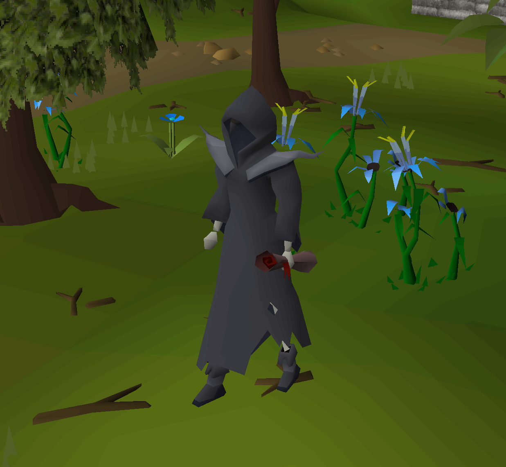
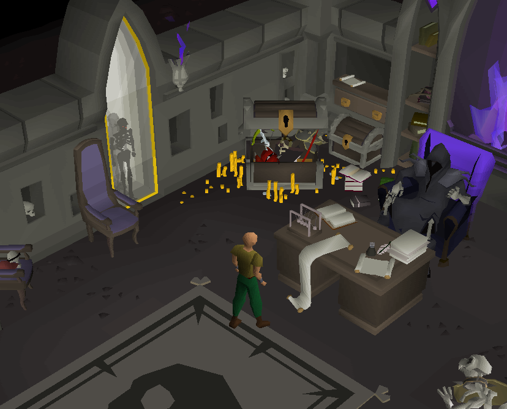
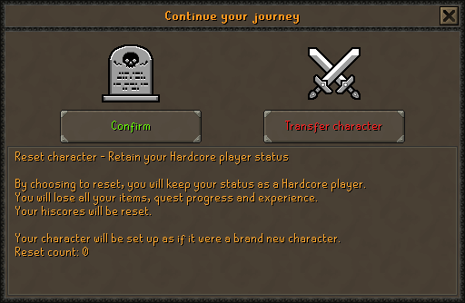
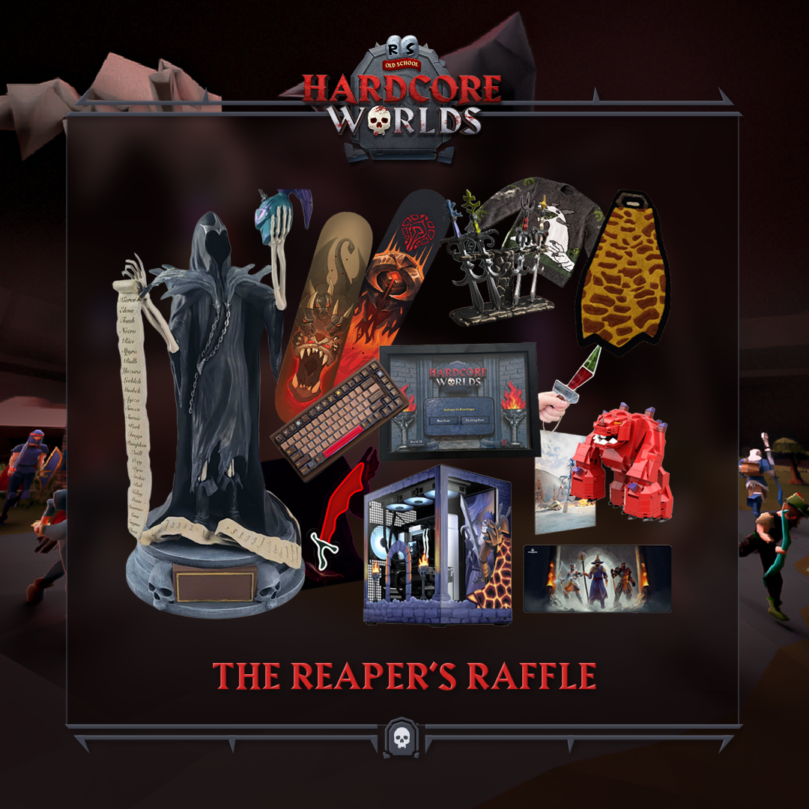

Updated at: 13:10 UTC
We hope you're having an exhilarating time in Hardcore worlds and continuing to defy Death! We just wanted to share a few quick updates ahead of the weekend regarding the frequency of death broadcasts and some of the bad actors abusing them to highlight inappropriate names.
We've deployed a hotfix to adjust death broadcast behaviour to cut down on spamming:
- Your first two deaths will always be broadcast.
- Your third death or beyond will only broadcast if you have at least 100 Total level.
- Your fifth death or beyond will only broadcast if you have at least 200 Total level.
- Next week, we'll be adding an extra layer to this via coldfix that won't broadcast deaths beyond your 20th more than once per day.
Additionally, some bad actors were abusing this broadcast spam to repeatedly show off extremely inappropriate names to players on Hardcore Worlds. We're actively working on adjusting our naming filter and will continue tightening if we see any more abuse cases, while issuing appropriate punitive action to characters with inappropriate names.
That's all from us today! Have a wonderful weekend, and don't die!
Updated at: 14:26pm UTC
We’ve been investigating gold entering the Hardcore Worlds economy through illicit means, and we have an update to share with you all.
Within around 1 hour of the worlds going live, we noticed characters with significantly more wealth than would be feasible to gather in that time live on the Hardcore Worlds. Upon further investigation we found the root cause of how this wealth was being introduced.
This was achieved by one person who found a unique way to leave Tutorial Island whilst being considered a Hardcore Worlds character, despite the mode not being launched yet. This allowed them to enter and progress in normal worlds. During this time, they obtained wealth and levelled skills, which then subsequently transferred over to Hardcore Worlds when it went live today.
Approximately 1.5 hours after Hardcore Worlds launched, the character in question was banned, along with their alts used to move the wealth around. We managed to prevent the majority of the gold brought in from reaching other hands and impacting the wider community.
- Wealth that entered the game: 115,563,777
- Wealth we removed from the source before reaching the economy: 103,175,293
- Suspected wealth that made it into the economy: 12,388,484
Additional safety measures have also been added to help prevent situations like this moving forward.
Our investigations don’t end here. We’ll continue to track down the remaining wealth and items that entered the economy and remove it from players until we’re happy that the impact is as minimal as possible. Expect the number above to update as the day progresses.
We can also confirm that despite speculation around other instances of abuse, including Clan Coffers and the PvP Arena, we have not identified any additional wealth being brought into the game outside of this singular instance.
The time has come for your inevitable end as you try and take on Death's challenge. He cannot wait to see you try, and try, and try again.
While Death eagerly watches, we wanted to give you one final rundown of the main things you need to know and even a couple of tips and tricks! You can find further information in our original Hardcore Worlds newspost.
Do remember, these worlds are permanent and do not contain any XP boosts or drop rate modifiers of any kind. You'll be going at the same pace as the main game!
To play Hardcore Worlds you will need a brand-new character, one that has not yet completed Tutorial Island.

Near Paul the Iron Tutor, you'll find Death's Delegate, a new NPC on the island that will be your first step to accessing these new worlds. Once you've spoken to the mini reaper-in-making and showed your interest in Hardcore Worlds, she'll direct you to finalise your time on Tutorial Island by speaking to the Magic Instructor.
If you've selected to participate in Hardcore Worlds you will receive the following dialogue from the Magic Instructor:
"I sense a strange magical pull on you... it seems you have attracted Death's interest. He's not a bad fellow, really, a bit of a stickler for the rules but generally quite helpful."
From this point onwards, you can use your Home Teleport as normal but instead ending up outside the iconic Lumbridge Castle, you'll be starting inside Death's Office being greeted by the big man himself. From this point onwards you'll be instructed to hop over to a Hardcore World to begin his challenge.
Here's the full breakdown of the 30 Hardcore Worlds:
| US (E) | US (W) | GER | UK | AUS | BRZ | SGP | |
|---|---|---|---|---|---|---|---|
| Standard | 634, 639, 640, 641, 642, 643 | 644, 648, 649, 650, 651 | 652, 656 | 657, 670 | 671 | 673 | 674 |
| Barbarian Assault | 637 | 654 | |||||
| Blast Furnace | 653 | ||||||
| Forestry | 645 | ||||||
| Group PvM | 638 | 647 | 655 | 659 | 672 | ||
| Guardians of the Rift | 635 | ||||||
| Pest Control | 646 | ||||||
| Tempoross | 658 | ||||||
| Wintertodt | 636 | 669 | |||||
| Total: | 10 | 8 | 5 | 5 | 2 | 1 | 1 |
Before you leave Death's Office, there's a few things of note to mention!
First is that you can buy Escape Crystals from him for 10,000 coins. These are must for any Hardcore player and you'd do good on stocking up on them when you can! Luckily for you, starting on Hardcore Worlds gives you one for free!
Secondly, you might notice an interesting new mirror in the room with which you can interact with, giving you the 'Death Report'! This new interface will provide you with a ton of information about your current character's progress and notable achievements.

Finally, Death's Office is now un-instanced, meaning you can see everyone else including those wanting to join Hardcore Worlds alongside those that recently perished to Varrock's Dark Wizards.
While you cannot trade inside this space, you can hop between Hardcore Worlds and the main game within Death's Office only to meet up with players, join a clan or gift membership to a friend!
Once you're happy and ready to go, leave Death's Office and begin your new Hardcore journey!
Now you've stepped into the wide world of Gielinor, this isn't the Hardcore mode most people are familiar with. For starter's you are not any form of Ironman, which means trading is allowed along with full access to the Grand Exchange.
Hardcore Worlds have a completely separate economy from the main game which means items from these worlds can only be bought and sold within them.
And, to truly make it a hardcore experience, we're following the Death Rules from Hardcore Group Ironman which means some deaths you might think are safe like the Fight Caves, Inferno and even Barbarian Assault are no longer:
- Barbarian Assault
- Camelot Training Room
- Chambers of Xeric
- Dream World (during Lunar Diplomacy)
- Fishing Trawler
- Inferno
- Magic Training Arena
- Nightmare Zone
- Pest Control
- PvM Arena
- Random Events
- Rogues' Den
- TzHaar Fight Cave
- Within the Player-owned House (PoH)
That doesn't mean there aren't exceptions though as the following minigames are safe:
- Castle Wars
- Clan Wars
- Soul Wars
- The Fremennik Trials (only the 4th phase of the duel with Koschei the Deathless)
- The Resurrection reward for the TzHaar Fight Caves from the Karamja Elite Diary
- TzHaar Fight Pit
- Zulrah (only the Resurrection reward from the Elite Western Provinces Diary)
Last Man Standing (LMS) and Bounty Hunter cannot be accessed on these worlds.

If you are to perish during your run, you'll be given a choice: Reset or Transfer.
If you choose to 'Reset' on Hardcore Worlds, EVERYTHING on that character will be reset, from quests, items, stats, etc. It's like you'll be straight off Tutorial Island once again. You have an unlimited number of resets on Hardcore Worlds.
Things like your Bank Pin and game settings won't be removed or changed and while things like the Stronghold of Security gold can be gotten again, we've implemented a 3-day cooldown once it's been received so these coins aren't abused.
If you choose to 'Transfer' to the Main Game, that character will be removed from Hardcore Worlds, with no ability to return. You'll keep your 3 (or 4) protected items if you had any, along with the items in your bank and anything in all other storages throughout the game.
Regardless of your choice, the main thing to remember is anything that would usually be sent to your Gravestone will be gone for good!

During the month of November, Death has kindly offered some underworld goodies of his own that everyone who plays Hardcore Worlds has a chance to win!
He's created a list of tasks that are mostly things you'll likely be doing anyway, in order for you to earn 'entries' into his raffle. This will culminate in a livestream on December 8th where Death and friends will draw all of the prizes in a very special livestream!
Up for grabs are:
- Official OSRS Merch
- A custom Death statue
- A Starforge PC bundle & other Starforge goodies
- Creator Crafted items
- Sets from OSRSBricks
- And much more...
Check out all the details in the Reaper's Raffle newspost which you can also use as your own personal task tracker!
While you wait for our launch we wanted to highlight a handful of videos that might give you some handy tips and tricks about Hardcore Worlds and playing a Hardcore character in general!
You can also discuss this update on the 2007Scape subreddit, the Steam forums, or the official OSRS Discord. For more information, check the official Old School Wiki.
Mods Abe, Abyss, Acorn, Ape, Arcane, Archie, Argo, Ash, Asherz, Ayiza, BigRig, Blighted, Blossom, Boko, Brooksie, Bulb, Chilly, Criminal, Curse, Daizong, Default, Doctor, Ed, Elena, Enigma, Entropi, Forge, Frogs, Fuzz, Gecko, Ghost, Gizmo, Goblin, Grace, Grub, Halo, Harold, Hend, Hornet, Husky, Ivory, Jalo, Jamesy, Jerv, Keyser, Kieren, Kirby, Kurotou, Leebleh, Lenny, Liron, Lotus, Lykos, Mack, Maeve, Manked, Markos, Maylea, Mobius, Moogle, Morty, Moz, Necro, Nin, Nixon, Nox, Nylu, Oasis, Onyx, Ori, Other, Otter, Pheasant, Philomel, Pork, Pumpkin, Puppi, Pyro, Rach, Redfield, Rice, Roy, Ry, Saiyan, Sarnie, Schmidt, Shogun, Shroom, Sigma, Skylark, Smithy, Sova, Spacebar, Spool, Spyro, Squid, Starry, Suharun, Surma, Sween, Tide, Titania, Titus, TJ, Tomb, Tsourorf, Tyran, Veda, Vegard, West, Wolfy, Yozora, Yume & Zaf
The Old School Team.